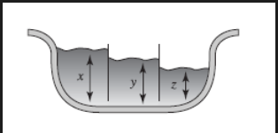

Taller de ecuaciones diferenciales de segundo orden
- Los siguientes ejercicios usted debe enecontrar la solcuión general de la siguietentes siguientes ecuciones lineales de segundo orden con coeficioentes constantes.
- \(4y''+y'=0\)
- \(y''-y'-6y=0\)
- \(y''-4y'+5y=0\)
- \(3y''+2y'+y=0\)
- Resuleva los problemas con valores iniciales de las siguientes y gráfica su solución usando un software pertinente
- \(y''+16y=0\), con \(y(0)=2\), \(y'(0)=-2\)
- \(\frac{d^2y}{d\theta}+y=0\), con \(y\Big(\frac{\pi}{3}\Big)=0\) \(y'\Big(\frac{\pi}{3}\Big)=2\)
- \(4x''-4x'-3x=0\), con \(x(0)=1\) y \(x'(0)=5\)
- \(y''+y'+2y=0\), con \(y(0)=0\), \(y'(0)=0\)
- Considere el problema de valor de frontera \(y''+\lambda y=0\), con los valores \(y(0)=0\), y \(y(\pi/2)=0\). Analice: ¿es posible determinar valores de \(\lambda\) tal que el problema tenga
- ¿Soluciones triviales? (Una solción trivial es cuando es constate igual a cero)
- ¿Soluciones no triviales?
- Resuelva la ecuación diferencial dada
- \(y''+3y'+2y=6\)
- \(y''-10y'-6y=2x\)
- \(y''-8y'+20y=100x^2-26xe^x\)
- \(y''-4y=(x^2-3)\sin2x\)
- Resuleve las siguientes ecuaciones diferenciales de segundo orden con coeficientes constantes
- \(y''+4y=tan(2t)\)
- \(y''-2y'+y=t^{-1}e^t\)
- \(y''+6y'+9y=t^{-3}e^{3t}\)
- Solucionar los sistmas de ecuaciaciones
\(\bf{y}'=\begin{bmatrix}3&4 \\ -1&-7\end{bmatrix}\bf{y}\)
\(\bf{y}'=\begin{bmatrix}3&4 \\ -1&7\end{bmatrix}\bf{y}\)
Problema En una charola de hielo, el nivel del agua en cualquier cubo de hielo cambia a razón proporcional a la diferencia entre le nivel del agua de ese cubo y el nivel del agua de los cubos adyacentes
Justifique un modelo razonable con una ecucación deferencial para los niveles de agua \(x,y,z\) en la charola simplificad con los tres cubos que aprecen en la figura 1, esta dadaa por
\(x'=y-x\), \(y'=x+z-2y\) \(z'=y-z\)
Use vectores propios para resolvere este sistema con condiciones inicales \(x(0)=3\) \(y(0)=z(0)=0\)

Figura 1
- Resuleva el sistema de ecuaciones diferenciales ordinarias de primer orden con condiciones iniciales dadas por:
\(\begin{aligned}\frac{dx}{dt}&=2x+2y\\\frac{dy}{dt}&=3x+3y\end{aligned}\)
\(\begin{aligned}\frac{dx}{dt}&=\frac{-5}{2}x+2y\\\frac{dy}{dt}&=\frac{4}{3}x-2y\end{aligned}\)
\(\begin{aligned}\frac{dx}{dt}&=-6x+2y\\\frac{dy}{dt}&=-3x+y\end{aligned}\)
Resuelva los problemas de valor inicial
\(\begin{aligned}\frac{dx}{dt}&=6x-y\\\frac{dy}{dt}&=5x+4y\end{aligned}\) con \(\begin{bmatrix}x(0)\\y(0)\end{bmatrix}=\begin{bmatrix}-2\\8\end{bmatrix}\)
\(\begin{aligned}\frac{dx}{dt}&=\frac{1}{2}x\\\frac{dy}{dt}&=x-\frac{1}{2}y\end{aligned}\) con \(\begin{bmatrix}x(0)\\y(0)\end{bmatrix}=\begin{bmatrix}3\\5\end{bmatrix}\)
Solución gerenal de sistemas
\[\frac{d}{dt}\begin{bmatrix}x(t)\\y(t)\end{bmatrix}=\begin{bmatrix}a_{11}&a_{12}\\a_{21}&a_{22}\end{bmatrix}\begin{bmatrix}x(t)\\y(t)\end{bmatrix}\]
Caso 1, Si los autovalores son reales y la dimesión geometrica y algebraica coinciden
Tiene dos autovalores \(\lambda_1\) y \(\lambda_2\) y dos autovectores \(V_1=\begin{bmatrix}v_{11}\\v_{21}\end{bmatrix}\) y \(V_2=\begin{bmatrix}v_{12}\\v_{22}\end{bmatrix}\) entoces las solución general es
\[\begin{align}\begin{bmatrix}x(t)\\y(t)\end{bmatrix}&=c_1V_1e^{\lambda_1 t}+c_2V_2e^{\lambda_2 t}\\ &=c_1\begin{bmatrix}v_{11}\\v_{21}\end{bmatrix}e^{\lambda_1 t}+c_2\begin{bmatrix}v_{12}\\v_{22}\end{bmatrix}e^{\lambda_2 t}\end{align}\]
Caso 2, Si los autovalores son reales y la dimesión geometrica y algebraica no coinciden
Tiene un autovalor \(\lambda\) y un autovector \(V=\begin{bmatrix}v_{1}\\v_{2}\end{bmatrix}\) y el autovalor generalizado \(P=\begin{bmatrix}p_{1}\\p_{2}\end{bmatrix}\) entoces las solución general es
\[\begin{align}\begin{bmatrix}x(t)\\y(t)\end{bmatrix}&=c_1Ve^{\lambda t}+c_2\Big(Vte^{\lambda t}+Pe^{\lambda t}\Big)\\ &=c_1\begin{bmatrix}v_{1}\\v_{2}\end{bmatrix}e^{\lambda t}+c_2\Big(\begin{bmatrix}v_{1}\\v_{2}\end{bmatrix}te^{\lambda t}+\begin{bmatrix}p_{1}\\p_{2}\end{bmatrix}e^{\lambda t}\Big)\end{align}\]
Caso 3, si los autovalores son complejos
tiene dos autovalores \(\lambda=\alpha+i\beta\) y \(\overline{\lambda}=\alpha-i\beta\) y dos autovectores \[V=\begin{bmatrix}a_{1}+ib_1\\a_{2}+ib_2\end{bmatrix}=\begin{bmatrix}a_{1}\\a_{2}\end{bmatrix}+i\begin{bmatrix}b_{1}\\b_{2}\end{bmatrix}\] y
\[\overline{V}=\begin{bmatrix}a_{1}-ib_1\\a_{2}-ib_2\end{bmatrix}=\begin{bmatrix}a_{1}\\a_{2}\end{bmatrix}-i\begin{bmatrix}b_{1}\\b_{2}\end{bmatrix}\]
Tomemos \[A=\begin{bmatrix}a_{1}\\a_{2}\end{bmatrix}\text{ y }B=\begin{bmatrix}b_{1}\\b_{2}\end{bmatrix}\] La solución general es la suma de la solución real y la compleja
\[\begin{bmatrix}x(t)\\y(t)\end{bmatrix}=c_1X_1-c_2X_2\] donde \[X_1=\Big(\begin{bmatrix}a_{1}\\a_{2}\end{bmatrix}\cos(\beta t)-\begin{bmatrix}b_{1}\\b_{2}\end{bmatrix}\sin(\beta t)\Big)e^{\alpha t}\] \[X_2=\Big(\begin{bmatrix}b_{1}\\b_{2}\end{bmatrix}\cos(\beta t)+\begin{bmatrix}a_{1}\\a_{2}\end{bmatrix}\sin(\beta t)\Big)e^{\alpha t}\]